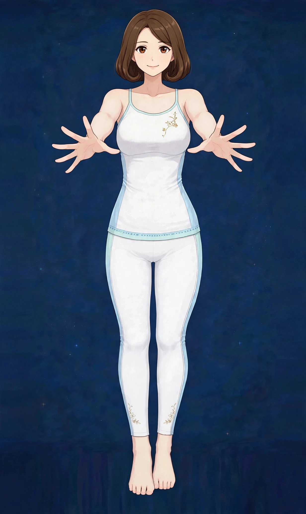

梅田で脇のはみ肉ケア｜美容整体で脇まわりと肩甲骨の動きにアプローチ｜ステラポラリス 梅田・女性専用美容・見た目

ノースリーブや下着の縁から脇の肉がはみ出す、腕を下ろすと脇まわりがもたつく——脇のはみ肉は、背中や二の腕と一続きのラインの悩みです。肩甲骨まわりとの関係から読み解いていきます。
脇のはみ肉はどこに、なぜ出るか
脇のはみ肉は、脇の下から胸の横、背中側にかけての部分に表れます。この一帯は、腕の付け根と肩甲骨、胸まわりが交わる場所で、姿勢が崩れると組織が寄り集まりやすい構造をしています。
特に、巻き肩で肩が前に出て、肩甲骨が開いた姿勢では、脇まわりは圧迫されてはみ出しやすくなります。下着の縁の締め付けが、それをさらに目立たせることもあります。図1のように、脇を中心に胸・背中・腕を一続きで眺めることが大切です。背中のたるみについては、専用ページでも扱っています。
脇まわりの見え方は、腕の位置でも大きく変わります。腕を少し上げたときと下ろしたときで見比べると、姿勢や肩甲骨の位置がどれだけ影響しているかが見えてきます。衣類の締め付けによる一時的なはみ出しと、姿勢によるものを分けて考えることも大切です。服を脱いだ状態と着た状態の両方で確認してみてください。
こんなサインはありませんか？ — 脇のはみ肉のチェックリスト
- 下着の縁から脇の肉がはみ出す
- 腕を下ろすと脇がもたつく
- ノースリーブで脇まわりが気になる
- 巻き肩や猫背が気になる
- 肩甲骨まわりが固い感じがする
- 二の腕のたるみも一緒に気になる
- 背中のはみ肉も気になる
- 腕を上げ下げする動きが小さい
当てはまる項目が多いほど、肩甲骨まわりの動きや姿勢に偏りが集まっている可能性があります。次の「要因」と見比べて、自分のパターンを確かめてみてください。
脇にはみ出しが出やすい要因
- 巻き肩と肩甲骨の開き：肩が前に出て肩甲骨が開く姿勢では、脇まわりは前に寄り集まります。はみ出しの見え方を決める、姿勢の大きな要因です。
- 肩甲骨まわりの動きの少なさ：腕を大きく動かす機会が減ると、脇まわりの組織は固まりやすくなります。動きの少なさは、巡りの滞りにもつながります。
- 巡りの滞り：脇の下はリンパの集まる場所として知られ、巡りが滞るともたつきが出やすくなります。腕を下ろしたままの姿勢の継続も要因です。
- 下着の締め付け：サイズの合わない下着の縁は、脇の肉を押し上げてはみ出しを強調します。衣類の見直しもケアの一部です。
- 二の腕・背中との連動：脇は二の腕と背中の境目です。両方のたるみが、脇のはみ出しとして合流して表れることがあります。
- 年齢によるハリの変化：年齢とともに肌のハリや筋肉量は変わり、脇まわりももたつきやすくなります。使い方と巡りの見直しで、印象は変わります。
図1｜脇まわりと肩甲骨の位置

東洋医学から見た考え方
東洋医学では、脇まわりには胆経が通り、脇の下のツボは巡りの要所として捉えられます。腕の内側には心経や心包経が通り、脇は多くの流れが集まる交差点のような場所です。
脇の見立てでは、肩甲骨の動きと巡りの滞りの両方を眺めます。施術では、脇から背中、二の腕へと一続きにほぐし、肩甲骨の動きを引き出す進め方を取ります。
代表的なツボ
脇のはみ肉のケアでよく挙げられるツボを紹介します。脇の下はデリケートなため、強い圧は避け、なでる・包むといったやさしい触れ方が基本です。
図2｜脇まわりで見たいポイント
おすすめ施術
美容整体・オイルマッサージ
施術では、まず脇まわりから背中、肩甲骨まわりをオイルマッサージでほぐし、巡りを助けながら組織の固まりをゆるめます。そのうえで美容整体で、巻き肩や肩甲骨の位置といった姿勢の土台に触れながら、上半身全体のバランスを整えていきます。
二の腕や背中のケアと組み合わせることで、境目なく一続きで整えることができます。脇のラインが整って見えるようアプローチするには、脇そのものと、肩甲骨の動きの両方が必要です。
施術の前後では、腕を下ろした状態と上げた状態の両方で、脇まわりの見え方を鏡で見比べます。下着の見直しについても、一般的な目安をお伝えできます。
自宅でできるセルフケア
脇のセルフケアは「巡りを助ける・肩甲骨を動かす・締め付けを見直す」の組み合わせが基本です。脇の下を強く押すケアは避けてください。
- 1．脇から腕へのなで流し脇の下から肘へ向けて、手のひらでやさしくなでるケアを左右10回ずつ。巡りを助ける基本の動きです。
- 2．肩甲骨まわりのストレッチ両肘を後ろへ引いて肩甲骨を寄せる動きを数回。脇の土台である肩甲骨の動きを取り戻します。
- 3．腕の大きな回し回転腕を前後に大きく回す動きを各10回。脇まわり全体を動かし、固まりを防ぎます。痛みのない範囲で行ってください。
- 4．下着の見直し脇の縁の跡が強く残る下着は、サイズや形の見直しどきです。締め付けを変えるだけで、はみ出しの見え方が変わることもあります。
- 5．壁や柱を使った胸を開くストレッチ壁の横に立ち、壁側の腕を肩の高さか、少し下の角度で後ろへ回し、手のひらを壁に当てます。そのまま体を壁と反対側へゆっくり向け、胸の前から脇にかけて伸びを感じるところで20〜30秒保ちます。左右それぞれ2回ずつが目安です。腕の角度は、伸びを感じる位置に合わせて少しずつ調整してください。肩に痛みやしびれが出る場合は角度を下げるか、その日の実施を中止してください。
図3｜脇から腕へのケア
場面別の注意
ノースリーブの季節の前
腕と脇が見える季節の前は、数週間前から姿勢と肩甲骨のケアを積み重ねる使い方がおすすめです。ブライダルの予定がある方も同様です。
デスクワークの日
腕を下ろして固定する姿勢が続く日は、時々腕を大きく回すリセットを。脇まわりの巡りを滞らせない小さな習慣です。
下着を新調するとき
フィッティングで脇のはみ出しも確認してもらうと、体と衣類の両面から見直せます。施術と衣類、両方の工夫がラインを助けます。
受診の目安
次のような場合は、サロンでのケアの前に医療機関への受診をおすすめします。
- 脇や腕にしこりや腫れがある
- 腕にしびれや力の入りにくさがある
- 片側の脇だけ急に腫れてきた
- 発熱を伴う脇の痛みや腫れがある
- 皮膚のただれや炎症がある
当店は医療機関ではなく、診断は行いません。迷うときは、まずかかりつけの医療機関にご相談ください。
よくある質問
Q．脇のはみ肉はなくなりますか？
肉そのものをなくすことをうたう施術ではありません。姿勢と肩甲骨の動き、巡りが整うことで、ラインがすっきり見えるようアプローチする内容です。下着の見直しと合わせると、見え方は変わりやすくなります。
Q．背中のページと何が違いますか？
「背中のたるみ」は背中全体、こちらは脇に絞った内容です。両者は一続きのため、当日は合わせてケアする組み立ても可能です。
Q．二の腕も一緒に相談できますか？
はい。脇と二の腕は境目なくつながっています。「二の腕のたるみ」のページもあわせてご覧ください。当日は配分を調整できます。
Q．リンパを強く流してもらえますか？
脇の下はデリケートな場所のため、強い圧での施術は行いません。やさしい圧で巡りを助ける進め方でも、施術後に軽さを感じる方は多くいます。
Q．下着のサイズや形が合っていないことも、はみ出しの原因になりますか？
原因のひとつになることがあります。アンダーがきつすぎる下着や、カップの形が体に合っていない下着は、縁の部分が脇の肉を押し上げて、はみ出しを目立たせます。見直しの目安としては、脱いだ後に背中や脇へ強い跡が残る、脇の縁が食い込む、肩ひもだけで支えている感覚が強い、といった状態が挙げられます。専門店でフィッティングを受け、サイズと形の両方を確認することがおすすめです。姿勢や肩甲骨のケアと、衣類の見直しを組み合わせることで、見え方は変わりやすくなります。
関連するお悩みページ
関連する経絡ページ
ご予約
ステラポラリス（大阪・梅田／女性専用）｜美容整体・オイルマッサージ 90分 10,000円｜月〜土 17:00〜22:00・完全予約制・中崎町駅徒歩5分
ご予約はLINE公式アカウントで受け付けています。希望の日時と、気になる場所を送ってください。
さらに学びたい方へ：現場で使われる専門書（PR）
このページのテーマに合わせて選んだ本と、当店の施術でも参考にしている専門書です。


※本ブロックのリンクはAmazonアソシエイト・プログラムおよび楽天アフィリエイトによる広告リンクです。使用感の保証をするものではありません。